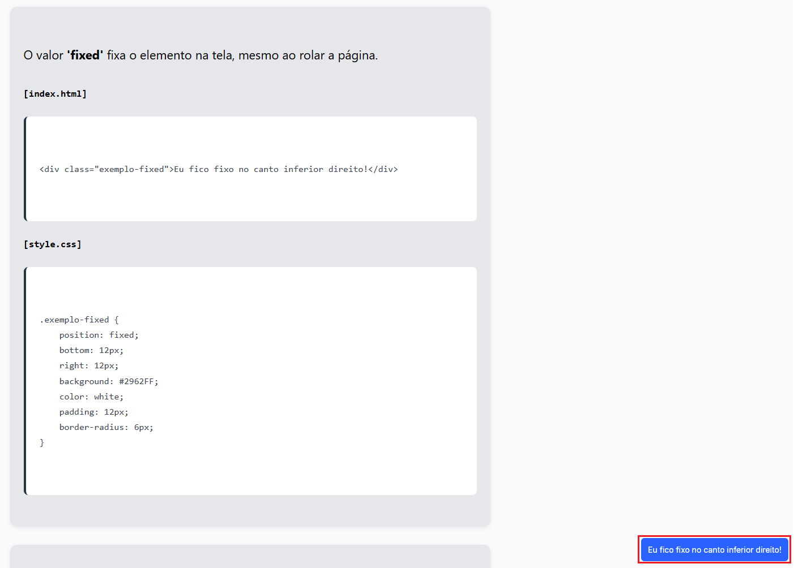

Este é um exemplo de texto definido como 'blue'
[index.html]
<p class="azul">Este é um exemplo de texto definido como 'blue'</p>
[style.css]
.azul {
color: blue;
}
Exemplos e aplicações das propriedades CSS
A propriedade 'color' define a cor do texto de um elemento HTML, pode ser definido por valor hexadecimal (HEX), RGB, nome da cor e todos outros sistemas de cores existentes
Este é um exemplo de texto definido como 'blue'
[index.html]
<p class="azul">Este é um exemplo de texto definido como 'blue'</p>
[style.css]
.azul {
color: blue;
}
A propriedade 'Font-family' especifica a fonte a ser usada para o texto
Este é um exemplo de texto definido com a fonte 'Times new roman'
[index.html]
<p class="fonte">Este é um exemplo de texto definido com a fonte 'Times new roman'</p>
[style.css]
.fonte {
font-family: "Times New Roman", Times, serif;
}
A propriedade 'Font-size' controla o tamanho do texto, pode ser definido em pixels, ems, rems, porcentagem, etc.
Este é um exemplo de texto definido com o tamanho de 10 pixels
Este é um exemplo de texto definido com o tamanho de 30 pixels
[index.html]
<p class="fontsize">Este é um exemplo de texto definido com o tamanho de 10 pixels</p>
<p class="fontsize2">Este é um exemplo de texto definido com o tamanho de 30 pixels</p>
[style.css]
.fontsize {
font-size: 10px;
}
.fontsize2 {
font-size: 30px;
}
A propriedade 'text-align' controla o alinhamento horizontal do texto dentro de seu elemento container. Os valores mais comuns são center (centro), left (esquerda), right (direita) e justify (justificado).
Este texto está centralizado com text-align: center;
[index.html]
<p class="exemplo-center">Este texto está centralizado com 'text-align: center;'</p>
[style.css]
.exemplo-center {
text-align: center;
}
Este texto está alinhado à esquerda com 'text-align: left';
[index.html]
<p class="exemplo-left">Este texto está alinhado à esquerda com 'text-align: left';</p>
[style.css]
.exemplo-left {
text-align: left;
}
Este texto está alinhado à direita com 'text-align: right';
[index.html]
<p class="exemplo-right">Este texto está alinhado à direita com 'text-align: right';</p>
[style.css]
.exemplo-right {
text-align: right;
}
A propriedade 'background-color' define a cor de fundo de um elemento. Pode ser definida por valor hexadecimal (HEX), RGB, nome da cor, entre outros.
Este texto está com fundo amarelo usando background-color: yellow;
[index.html]
<p class="exemplo-bg">Este texto está com fundo amarelo usando 'background-color: yellow;'</p>[style.css]
.exemplo-bg {
background-color: yellow;
}
A propriedade 'margin' define o espaço externo ao redor de um elemento.
Este parágrafo possui uma margem de 40px.
[index.html]
<p class="exemplo-margin">Este parágrafo possui uma margem de 40px.</p>[style.css]
.exemplo-margin {
margin: 40px;
}A propriedade 'padding' define o espaço interno entre o conteúdo e a borda de um elemento.
Este parágrafo possui um padding de 30px.
[index.html]
<p class="exemplo-padding">Este parágrafo possui um padding de 30px.</p>[style.css]
.exemplo-padding {
padding: 30px;
background: #e0e0e0;
}A propriedade 'border' define a borda ao redor de um elemento.
Este parágrafo possui uma borda de 2px sólida azul.
[index.html]
<p class="exemplo-border">Este parágrafo possui uma borda de 2px sólida azul.</p>[style.css]
.exemplo-border {
border: 2px solid blue;
padding: 10px;
}As propriedades 'width' e 'height' definem a largura e altura de um elemento.
[index.html]
<div class="exemplo-wh">Este bloco tem 220px de largura e 70px de altura.</div>[style.css]
.exemplo-wh {
width: 220px;
height: 70px;
background-color: #ff5733;
}A propriedade 'display' controla como um elemento é exibido na página. Os valores mais comuns são block, inline e inline-block.
O valor 'block' faz com que o elemento ocupe toda a largura disponível (mesmo que o conteúdo seja pequeno).
Span 1 Span 2[index.html]
<span class="exemplo-inline">Span 1</span>
<span class="exemplo-inline">Span 2</span>[style.css]
.exemplo-block {
display: inline;
background-color: #ff5733;
color: white;
padding: 10px;
margin: 8px 0;
}O valor 'inline' faz com que o elemento ocupe apenas o espaço necessário para seu conteúdo, permitindo que outros elementos fiquem na mesma linha.
Span 1 Span 2[index.html]
<span class="exemplo-inline">Span 1</span>[style.css]
.exemplo-inline {
display: inline;
background-color: #ff5733;
color: white;
padding: 10px;
margin: 5px;
}O valor 'inline-block' combina características de block e inline, permitindo definir largura e altura, mas mantendo elementos na mesma linha.
Span 1 Span 2[index.html]
<span class="exemplo-inline-block">Span 1</span>
<span class="exemplo-inline-block">Span 2</span>[style.css]
.exemplo-inline-block {
display: inline-block;
background-color: #ff5733;
color: white;
padding: 10px;
margin: 8px 0;
}A propriedade 'position' define como um elemento é posicionado na página. Os valores mais comuns são static, relative, absolute, fixed e sticky. Quando o valor é diferente de static, podemos usar também as propriedades top, right, bottom e left para ajustar sua posição.
O valor 'static' é o padrão. O elemento segue o fluxo normal da página, sem deslocamentos especiais.
[index.html]
<div class="exemplo-static">Este bloco está com 'position: static'.</div>
[style.css]
.exemplo-static {
position: static;
background: #ff5733;
color: white;
padding: 14px;
}
O valor 'relative' posiciona o elemento em relação à sua posição original, permitindo mover com top, left, right, bottom.
[index.html]
<div class="exemplo-relative">Este bloco foi movido 20px para baixo e 30px para a direita.</div>
[style.css]
.exemplo-relative {
position: relative;
top: 20px;
left: 30px;
background: #2962FF;
color: white;
padding: 14px;
}
O valor 'absolute' posiciona o elemento em relação ao ancestral com position: relative (ou ao <body> se nenhum existir).
[index.html]
<div class="exemplo-abs-container">
<div class="exemplo-absolute">Este bloco está preso ao container.</div>
</div>
[style.css]
.exemplo-abs-container {
position: relative;
height: 120px;
background: #e0e0e0;
border: 1px solid #ccc;
}
.exemplo-absolute {
position: absolute;
top: 10px;
right: 20px;
background: #ff5733;
color: white;
padding: 12px;
}
O valor 'fixed' fixa o elemento na tela, mesmo ao rolar a página.
[index.html]
<div class="exemplo-fixed">Eu fico fixo no canto inferior direito!</div>
[style.css]
.exemplo-fixed {
position: fixed;
bottom: 12px;
right: 12px;
background: #2962FF;
color: white;
padding: 12px;
border-radius: 6px;
}
O valor 'sticky' mistura relative e fixed: o elemento se move normalmente, mas fica "grudado" em um ponto da rolagem.
[index.html]
<div class="exemplo-sticky">Eu fico grudado no topo quando você rola a página.</div>
[style.css]
.exemplo-sticky {
position: sticky;
top: 0;
background: #ff5733;
color: white;
padding: 12px;
}